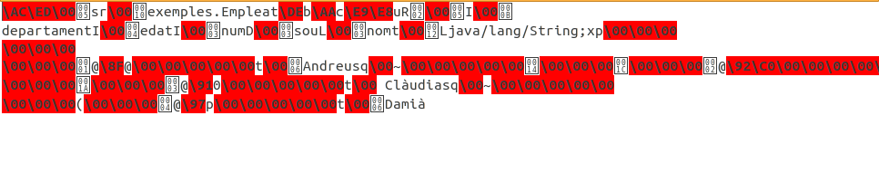

3.- Seriació d'objectes
Seriació d'objectes
La tècnica de la seriació és segurament la més senzilla de totes, però també a la vegada la més problemàtica. Java, i per tant també Kotlin, disposa d’un sistema genèric de seriació de qualsevol objecte, un sistema recursiu que es repeteix per cada objecte contingut a la instància que s’està seriant. Aquest procés para en arribar als tipus primitius, els quals es guarden com una sèrie de bytes. A banda dels tipus primitius, Java serialitza també molta informació addicional o metadades específiques de cada classe (el nom de les classe, els noms dels atributs i molta més informació addicional). Gràcies a les metadades es fa possible automatitzar la seriació de forma genèrica amb garanties de recuperar un objecte tal com es va guardar.
Lamentablement, aquest és un procediment específic de Java. És a dir, no és possible recuperar els objectes seriats des de Java utilitzant un altre llenguatge. D’altra banda, el fet de guardar metadades pot arribar a comportar també problemes, encara que utilitzem sempre el llenguatge Java. La modificació d’una classe pot fer variar les seues metadades. Aquestes variacions poden donar problemes de recuperació d’instàncies que hagen estat guardades amb algunes versions anteriors a la modificació, impedint que l’objecte puga ser recuperat.
Aquestes consideracions fa que no siga pràctica aquesta tècnica per guardar objectes de forma més o menys permanent. En canvi, la seua senzillesa la fa una perfecta candidata per a l’emmagatzematge temporal, per exemple dins de la mateixa sessió.
Per a que un objecte puga ser seriat cal que la seua classe i tot el seu contingut implementen la interfície Serializable. Es tracta d’una interfície sense mètodes, perquè l’únic objectiu de la interfície és actuar de marcador per indicar a la màquina virtual quines classes es poden seriar i quines no.
Totes les classes equivalents als tipus bàsics ja implementen Serializable. També implementen aquesta interfície la classe String i tots els contenidors i els objectes Array. La seriació de col·leccions depèn en últim terme dels elements continguts. Si aquestos són seriables, la col·lecció també ho serà.
En cas que la classe de l’objecte que s’intente seriar, o les d’algun dels objectes que continga, no implementaren la interfície Serializable, es llançaria una excepció de tipus NotSerializableException, impedint l’emmagatzematge.
Els Streams ObjectInputStream i ObjectOutputStream són decoradors que afegeixen a qualsevol altre Stream la capacitat de seriar qualsevol objecte Serializable. El stream d'eixida disposarà del mètode writeObject. i el stream d’entrada, el mètode de lectura readObject.
El mètode readObject només permet recuperar instàncies que siguen de la mateixa classe que la que es va guardar. En cas contrari, es llançaria una excepció de tipus ClassCastExeception. A més, cal que l’aplicació dispose del codi compilat de la classe; si no fóra així, l’excepció llançada seria ClassNotFoundException.
Exemple
Ens recolzarem en un exemple utilitzat en els anteriors punts, en els empleats. Ara anem a suposar que els empleats són objectes, i intentarem guardar aquestos objectes en un fitxer amb una seriació.
El primer pas serà construir la classe Empleat, que contindrà la mateixa informació que en els altres apartats: número d'empleat, nom, departament, edat i sou.
package exemples
import java.io.Serializable
class Empleat (var num: Int, var nom: String, var departament: Int, var edat: Int, var sou: Double): SerializableAnem a intentar construir el fitxer de dades amb els objectes guardats. El flux de dades serà un ObjectOutputStream per a poder escriure (writeObject). I observeu com s'ha de recolzar en un OutputStream, que en aquest cas serà d'un fitxer, és a dir un FileOutputStream. A cada iteració del bucle senzillament construirem un objecte de la classe Empleat i l'escriurem al fitxer. Copieu el següent codi en un fitxer Kotlin anomenat Exemple_3_3_1_GuardarObjectes.kt
import java.io.ObjectOutputStream
import java.io.FileOutputStream
fun main(args: Array<String>) {
val f = ObjectOutputStream(FileOutputStream("Empleats.obj"))
val noms = arrayOf("Andreu", "Bernat", "Clàudia", "Damià")
val departaments = arrayOf(10, 20, 10, 10)
val edats = arrayOf(32, 28, 26, 40)
val sous = arrayOf(1000.0, 1200.0, 1100.0, 1500.0)
for (i in 0..3){
val e = Empleat (i + 1, noms[i], departaments[i], edats[i], sous[i])
f.writeObject(e)
}
f.close();
}Nota
El fitxer creat, Empleats.obj, evidentment no és de text. Tanmateix si l'obrim amb un editor de text podrem veure alguna cosa.

- La primera qüestió és que es guarda el nom de la classe amb el nom del paquet davant. exemples.Empleat és realment el nom de la classe creada.
- Es guarden també els noms dels camps. Tot això són les metadades que havíem comentat, i que permeten la recuperació posterior dels objectes guardats
- I després ja podem veure la informació guardada, on identifiquem els noms dels empleats
Per a llegir el fitxer creat, Empleats.obj, utilitzarem el ObjectInputStream per a poder fer readObject. S'ha de basar en un InputStream, que en aquest cas serà un FileInputStream.
Lamentablement el mètode available() no funcionarà correctament, i no ens dirà realment els bytes que queden per llegir.
El tractament de final de fitxer el farem capturant l'excepció (l'error) d'haver arribat al final i intentat llegir encara: EOFException. La raó és que readObject no torna null, a no ser que s'haja introduït aquest valor. Per tant muntem un bucle infinit, però capturant amb try ... catch l'error, que és quan tancarem el Stream. Copieu el següent codi a un fitxer Kotlin anomenat Exemple_3_3_2_LlegirObjectes.kt
package exemples
import java.io.ObjectInputStream
import java.io.FileInputStream
import java.io.EOFException
fun main(args: Array<String>) {
val f = ObjectInputStream(FileInputStream("Empleats.obj"))
try {
while (true) {
val e = f.readObject() as Empleat
println("Número: " + e.num)
println("Nom: " + e.nom)
println("Departament: " + e.departament)
println("Edat: " + e.edat)
println("Sou: " + e.sou)
println();
}
} catch (eof: EOFException) {
f.close()
}
}Nota
En realitat, en el fitxer es guarda, a més del nom del paquet i el nom de la classe, l'identificador de la classe: el serialVersionUID, per a poder identificar unívocament la classe. Això ens pot donar problemes si intentem compartir la informació entre nosaltres, ja que perfectament ens pot generar UID diferents. Per a evitar-lo podríem definir nosaltres aquest serialVersionUID, i aleshores no hi haurà problemes per a compartir. Fins i tot serviria per a poder compartir el fitxer d'objectes entre Kotlin i Java
package exemples
import java.io.Serializable
class Empleat (var num: Int,var nom: String,var departament: Int,var edat: Int,var sou: Double): Serializable {
companion object {
private const val serialVersionUID: Long = 1
}
}Si fem aquest canvi en la classe Empleat haurem de tornar a generar el fitxer (Exemple_3_3_1_GuardarObjectes.kt) abans de poder consultar-lo (Exemple_3_3_2_LlegirObjectes.kt), perquè a tots els efectes seria una classe nova.
Llicenciat sota la Llicència Creative Commons Reconeixement NoComercial CompartirIgual 2.5